We enable lending businesses to work with new immigrants immediately by incorporating foreign credit history -- calculated in near real-time -- into the risk assessment process.
In a Minimum Viable Product (MVP) we provide recent Europe -> United States immigrants with a credit score calculated based on their credit history from Europe, which lending businesses in the US can access and incorporate in their loan decision-making process.
Our long-term goal is to allow a person who is immigrating to a different country to take their domestic credit history with them and be able to use it to access credit products in a country they are moving to -- or rather, to make it so any person has a unified credit history regardless of borders.
In the spirit of the Payment Services Directive (PSD2), this app provides a toolset to individual consumers so that they can have greater transparency into their own financial data, including credit rating. This app allows a consumer to obtain their account data from various financial institutions, bring it all into the same "workspace", and obtain summary insights.
We'd be violating the spirit of PSD2 if we _only_ provided transparency to lenders. The point of PSD2 is to provide both consumers and lenders equal (where appropriate) transparency into financial analysis decisions.

The first step, of course, is to obtain financial data. We attach to Open Banking providers to obtain (with consent) financial data pertaining to a particular person. We bring that data into a virtual workspace where input from all regions is treated equally.
Data schemas are disparate, even among Open Banking providers. Normalization is the process of transforming all data into a "level playing field" in order to apply commensurate analytics.
We apply algorithms to the data in order to bring key criteria related to a person's credit-worthiness to the forefront.
We summarize the outcomes of our analytics in order to present them for easy consumption by both consumers and lenders.
We understand that our output is one informing ingredient among several in an overall analysis. We expect our output to augment overall analysis. There is no sense in which our output is expected to be responsible solely for the outcome of a lending decision.
ifinn@civizmundi.com